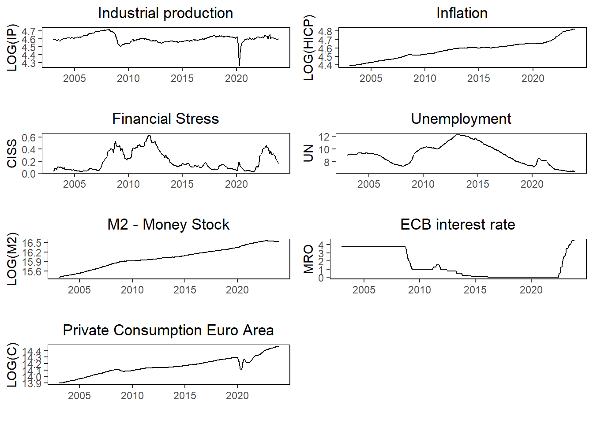
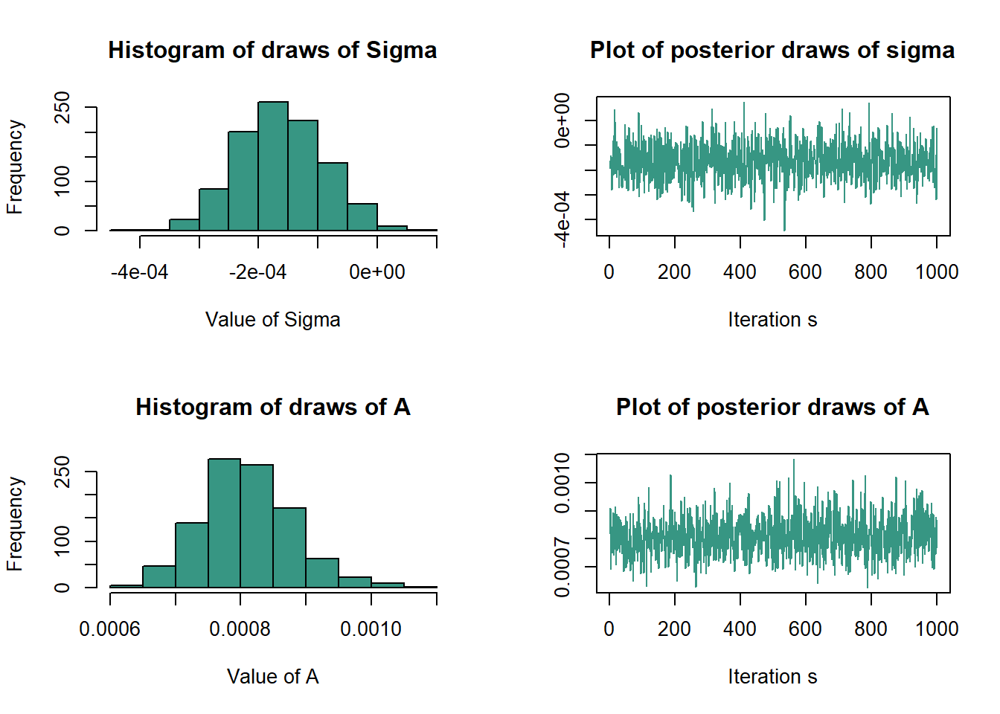

Bayesian VAR Forecast of Economic Activity using Macroeconomic and Financial Variables
Abstract
Research question
Past financial crises such as in 2008 have shown the severe impact that financial conditions can have on the real economy with crashes followed by increasing unemployment and decreased economic activity. This research project’s aim to analyze the forecasting performance of macroeconomic variables by including financial variables to forecast GDP.
Thus the research question can be stated as: Will including financial variables improve the forecasting performance of economic activity?
Motivation
Traditional macroeconomic modelling often exclude financial markets, as the effects from the financial nominal variables on real variables are deemed insignificant per the classical dichotomy in macroeconomics. However, as earlier studies have shown and the descriptive analysis following this will illustrate, changes in the financial sector can spill over to economic activity. Therefore, it could help explaining the real economy, which could translate to improved forecasting performance.
As both monetary and fiscal policy is not only based on current economic conditions but also expectations regarding the future, it is essential to be able to generate accurate predictions of economic activity and inflation in the future.
Data and its properties
My choice of variables is somewhat inspired by papers like Peersman et. al (2017), who perform SVAR analyses of the ECB’s monetary policy, however, I am instead interested in examining the forecasting ability of macroeconomic variables combined with financial for the euro area. As forecasts are often short-term forecasts of the immediate future, data frequency has to be high, hence all data used in this analysis is monthly.
The economic variables used in this analysis are then:
To model the economic activity in the euro area, I use the Industrial Production as proxy for the movements in the Gross Domestic Product (GDP). If I instead opted to use GDP as a variable directly, I would have been required to apply temporal disaggregation, as GDP is tracked quarterly.
The price level in the euro area is included as the Harmonized Index of Consumer Prices (HICP), which measures the price level and inflation across the euro area. Including the price level is important, as it is a major concern for policy makers and it will affect the economic activity and be affected by financial conditions. The base year of the HICP is 2015.
Additionally, I include unemployment in the euro area, as it is both an indicator of economic activity and current expectations to the future. Hence, unemployment serves as an important variable to include when modelling the economy.
I chose to include financial stress, which is measured by composite indicator variable for systemic stress (CISS) in the euro area, as financial conditions and markets highly affects the economic activity, inflation and unemployment.
I include the M2 money supply in the euro area to include the most liquid part of the overall money supply and short term deposits, as it illustrates the available economic resources in the economy.
The key ECB interest rate the Main Refinancing Operations (MRO) is included as well, which state the interest that banks have to pay, if they want to borrow money for a week.
Finally, I include private consumption to measure how much money households are spending, which illustrate the economic activity.
The used time series are collected from the ECB’s data warehouse with the chosen time period 01.01.2003 to 2023.12.01. I use the package ecb to collect the data.
Descriptive analysis
The five variables are visualized in Figure 1, where I have taken the logarithm to all variables except from the indicator variable CISS. Inflation and M2 money supply seem to follow an upwards trend, while industrial production, financial stress and unemployment all seem to follow each other, such that industrial production is negative correlated with unemployment and financial stress. Intuitively it makes sense that economic activity decreases with increasing unemployment or stress and uncertainty in the financial sector.
Autocorrelation in the variables
Additionally, I check for autocorrelation in the time series in Figure 2 and Figure 3, where there is clearly a high degree of memory in the variables.


Unit root tests
To test for the timeseries being stationary, I apply an Augmented Dickey Fuller (ADF) test, by using the adf(), which tests for the presence an unit root in the time series with the chosen lag of 12 periods, since the data is monthly. Table 1 reports the test statistics for the ADF tests:
| Variable | ADF_Statistic | P_Value | lags |
|---|---|---|---|
| HICP | -5.537 | 0.010 | 12 |
| IP | -2.961 | 0.171 | 12 |
| CISS | -2.260 | 0.466 | 12 |
| UN | -2.891 | 0.200 | 12 |
| M2 | -1.339 | 0.854 | 12 |
| MRO | -3.035 | 0.140 | 12 |
| Consumption | 0.191 | 0.990 | 12 |
Only for inflation can I reject the possibility of an unit root being present at the 5 pct. confidence interval.
The model
To analyze the macroeconomic and financial variables and run forecasts, a vector autoregression (VAR) model can be applied, which allows for the multivariate framework of several timeseries. A general VAR model with \(\rho\) lags for \(t=1,...,T\) can be stated as:
\[\begin{gather} y_{t} =\mu_{0}+A_{1}y_{t-1}+...+A_{\rho}y_{t-\rho}+\epsilon_{t} \epsilon_{t}|Y_{T-1} \sim iid\left(0_{N},\Sigma\right) \end{gather}\]
Where \(y_{t}=N\times1\) is a vector of observations at time \(t\), \(\mu_{0}=N\times1\) is a vector of constant terms, \(A_{i}=N\times N\) is a vector of the autoregressive slope parameters, \(\epsilon_{t}=N\times1\) is a vector of error terms, \(Y_{t-1}\) is the information set and \(\Sigma=N\times N\) is the covariance matrix of the error term.
In matrix form, I have the model as with N=7 variables: \[\begin{gather} Y =XA+E E|X \sim\mathcal{MN}_{T\times N}\left(0_{T\times N},\Sigma,I_{T}\right) \end{gather}\]
Where \(Y=T\times7\) matrix, \(X=T\times\left(1+\left(7\times p\right)\right)\), \(A=\left(1+\left(7\times p\right)\right)\times6\) matrix that has the relationships between the used variables and \(E=T\times7\) matrix of error terms. \(p=12\) which is the amount of lags for monthly data and in total I have 252 observations of monthly data.
Matrix version of model
In matrix form, I have the model as with \(N=7\) variables:
\[\begin{gather} Y =XA+E \end{gather}\]
\[\begin{gather} E|X \sim\mathcal{MN}_{T\times N}\left(0_{T\times N},\Sigma,I_{T}\right) \end{gather}\]
Where \(Y=T\times7\) matrix, \(X=T\times\left(1+\left(7\times p\right)\right)\) matrix, \(A=\left(1+\left(7\times p\right)\right)\times7\) matrix that has the relationships between the used variables and \(E=T\times7\) matrix of error terms. p=12 which is the amount of lags for monthly data and in total I have 252 observations of monthly data.
Baseline model:
Then the likelihood function is given by:
\[\begin{align} Y|X,A,\Sigma&\sim\mathcal{MN}_{T\times N}\left(XA,\Sigma,I_{T}\right)\\L\left(A,\Sigma|Y,X\right)&\propto\det\left(\Sigma\right)^{-\frac{T}{2}}\exp\left(-\frac{1}{2}tr\left[\Sigma^{-1}\left(Y-XA\right)'\left(Y-XA\right)\right]\right) \end{align}\]
The natural conjugate priors for A and are then assumed to follow matrix-variate normal and inverse Wishart distributions:
\[\begin{align} p\left(A,\Sigma\right)&=p\left(A|\Sigma\right)p\left(\Sigma\right)\\A|\Sigma&\sim\mathcal{MN}_{T\times N}\left(\underline{A},\Sigma,\underline{V}\right)\\\Sigma&\sim IW_{N}\left(\underline{S},\underline{\nu}\right) \end{align}\]
Which follow the Minnesota prior set as:
\[\begin{align} \underline{A}&=\left[0_{N\times1},I_{N},0_{N\times\left(p-1\right)N}\right]'\\\underline{V}&=diag\left(\left[\kappa_{2},\kappa_{1}\left(p^{-2}\otimes1_{N}^{'}\right)\right]\right)\\\underline{\nu}&=N+1 \end{align}\]
Then the posterior distribution will be:
\[\begin{align} p\left(A,\Sigma|Y,X\right)&\propto\det\left(\Sigma\right)^{-\frac{T}{2}}\\&\times\exp\left(-\frac{1}{2}tr\left[\Sigma^{-1}\left(A-\hat{A}\right)'X'X\left(A-\hat{A}\right)\right]\right)\\&\times\exp\left(-\frac{1}{2}tr\left[\Sigma^{-1}\left(Y-X\hat{A}\right)'\left(Y-X\hat{A}\right)\right]\right)\\&\times\det\left(\Sigma\right)^{-\frac{N+K+\underline{\nu}+1}{2}}\\&\times\exp\left(-\frac{1}{2}tr\left[\Sigma^{-1}\left(A-\underline{A}\right)'\underline{V}^{-1}\left(A-\underline{A}\right)\right]\right)\\&\times\exp\left(-\frac{1}{2}tr\left[\Sigma^{-1}\underline{S}\right]\right) \end{align}\]
Then by combining the terms yields the posterior distributions for \(A\) and \(\Sigma\) as:
\[\begin{align} p\left(A,\Sigma|Y,X\right)&\propto\det\left(\Sigma\right)^{-\frac{T+N+K+\underline{\nu}+1}{2}}\\&\times\exp\left(-\frac{1}{2}tr\left[\Sigma^{-1}\left[\left(A-\hat{A}\right)'X'X\left(A-\hat{A}\right)+\left(Y-X\hat{A}\right)'\left(Y-X\hat{A}\right)\right.\right.\right.\\&+\left.\left.\left.\left(A-\underline{A}\right)'\underline{V}^{-1}\left(A-\underline{A}\right)+\underline{S}\right)\right]\right] \end{align}\]
Writing all the squares out yields the full conditional as:
\[\begin{align} p\left(A,\Sigma|Y,X\right)&=p\left(A|Y,X,\Sigma\right)p\left(\Sigma|Y,X\right)\\p\left(A|Y,X,\Sigma\right)&=\mathcal{MN}_{T\times N}\left(\overline{A},\Sigma,\overline{V}\right)\\p\left(\Sigma|Y,X\right)&=IW_{N}\left(\overline{S},\overline{\nu}\right)\\\overline{V}&=\left(X'X+V^{-1}\right)^{-1}\\\overline{A}&=\overline{V}\left(X'Y+\underline{V}^{-1}\underline{A}\right)\\\overline{\nu}&=T+\underline{\nu}\\\overline{S}&=\underline{S}+Y'Y+\underline{A}'\underline{V}^{-1}\underline{A}-\overline{A}'\overline{V}^{-1}\overline{A} \end{align}\]
The baseline model can be estimated by:
### Baseline model BVAR estimation:
# Setting specifications
N = ncol(Data[ , -1])
p = 12
K = 1+N*p
S = 1000
set.seed(1)
# Initializing X and Y matrices
y = ts(Data[ , -1], start=c(2003,1), frequency=12)
Y = ts(y[13:nrow(y),], start=c(2004,1), frequency=12)
X = matrix(1,nrow(Y),1)
for (i in 1:p){
X = cbind(X,y[13:nrow(y)-i,])
}
# Maximum Likelihood Estimator
A.hat = solve(t(X)%*%X)%*%t(X)%*%Y
Sigma.hat = t(Y-X%*%A.hat)%*%(Y-X%*%A.hat)/T
# Setting Minnesota Prior
kappa.1 = 0.02^2
kappa.2 = 100
A.prior = matrix(0,nrow(A.hat),ncol(A.hat))
A.prior[2:(N+1),] = diag(N)
priors = list(
A.prior = A.prior,
V.prior = diag(c(kappa.2,kappa.1*((1:p)^(-2))%x%rep(1,N))),
S.prior = diag(diag(Sigma.hat)),
nu.prior = N+1
)
# BVAR function
BVAR = function(Y,X,priors,S){
# normal-inverse Wishart posterior parameters
V.bar.inv = t(X)%*%X + diag(1/diag(priors$V.prior))
V.bar = solve(V.bar.inv)
A.bar = V.bar%*%(t(X)%*%Y + diag(1/diag(priors$V.prior))%*%priors$A.prior)
nu.bar = nrow(Y) + priors$nu.prior
S.bar = priors$S.prior + t(Y)%*%Y + t(priors$A.prior)%*%diag(1/diag(priors$V.prior))%*%priors$A.prior - t(A.bar)%*%V.bar.inv%*%A.bar
S.bar.inv = solve(S.bar)
#posterior draws
Sigma.posterior = rWishart(sum(S), df=nu.bar, Sigma=S.bar.inv)
Sigma.posterior = apply(Sigma.posterior,3,solve)
Sigma.posterior = array(Sigma.posterior,c(N,N,sum(S)))
A.posterior = array(rnorm(prod(c(dim(A.bar),sum(S)))),c(dim(A.bar),sum(S)))
L = t(chol(V.bar))
for (s in 1:sum(S)){
A.posterior[,,s]= A.bar + L%*%A.posterior[,,s]%*%chol(Sigma.posterior[,,s])
}
posterior = list(
Sigma.posterior = Sigma.posterior,
A.posterior = A.posterior
)
return(posterior)
}
# Applying BVAR function
posterior.draws = BVAR(Y=Y, X=X, priors=priors, S=S)
round(apply(posterior.draws$Sigma.posterior, 1:2, mean),3)
round(apply(posterior.draws$A.posterior, 1:2, mean),3)To demonstrate that it works, I generate a bivariate Gaussian random walk process with 1 lag:
[,1] [,2]
[1,] 0.958 0.044
[2,] 0.044 1.030 [,1] [,2]
[1,] -0.083 -0.013
[2,] 0.992 0.007
[3,] -0.001 0.999
The posterior mean of the matrices are close to an identity matrix and for the constant term, it is close to a zero vector. Hence, the estimation appears robust.
Extended model
As I plan to include private consumption as variable, I will have to extend the model, as consumption is only tracked quarterly, so I will need to estimate the monthly values between the quarterly data. This extension can be represented:
\[\begin{align} \tilde{y}_{t^{*}}&=A_{1}y_{t^{*}-1}+\epsilon_{t^{*}}\\\tilde{y}_{t^{*}+1}&=A_{1}\tilde{y}_{t^{*}}+\epsilon_{t^{*}+1}\\\epsilon_{t^{*}}&\sim N\left(0,\Sigma\right) \end{align}\]
Then I have the kernels as:
\[\begin{align} \exp\left(-\frac{1}{2}\left(\tilde{y}_{t^{*}}-A_{1}y_{t^{*}-1}\right)'\Sigma^{-1}\left(\tilde{y}_{t^{*}}-A_{1}y_{t^{*}-1}\right)\right)\\\exp\left(-\frac{1}{2}\left(A_{1}\tilde{y}_{t^{*}}-y_{t^{*}+1}\right)'\Sigma^{-1}\left(A_{1}\tilde{y}_{t^{*}}-y_{t^{*}+1}\right)\right) \end{align}\]
Thus we have the extension’s full conditional posterior for extension as:
\[\begin{align} \tilde{y}_{t^{*}}&\sim N_{N}\left(\bar{\tilde{y}}_{t^{*}},\bar{V}_{t^{*}}\right)\\\bar{V}_{t^{*}}&=\left[\Sigma^{-1}+A'\Sigma^{-1}A\right]^{-1}\\\bar{\tilde{y}}_{t^{*}}&=\bar{V}_{t^{*}}\left[\Sigma^{-1}Ay_{t^{*}+1}+A'\Sigma^{-1}y_{t^{*}+1}\right]\\\tilde{y}_{t^{*}1}|\tilde{y}_{t^{*}2}&\sim N\left(\bar{\tilde{y}}_{t^{*}1},\bar{V}_{t^{*}1}\right) \end{align}\]
Then the code will be changed by including the sampling of the missing \(\tilde{y}_{t^{*}}\) in the Gibbs Sampler:
For each \(s\in\left\{ 1,...,S\right\})\)
\[\begin{align} 1)&\text{Sample }A^{\left(S\right)},\Sigma^{\left(S\right)}\sim p\left(A,\Sigma|Y,X,\tilde{y}^{\left(s-1\right)}\right)\\2)&\text{Sample }\tilde{y}^{\left(s\right)}\sim p\left(\tilde{y}|Y,X,A^{\left(S\right)},\Sigma^{\left(S\right)}\right) \end{align}\]
Which yield: \(A^{\left(S\right)},\Sigma^{\left(S\right)},\tilde{y}^{\left(s\right)}\)
The code is then as follows:
### Extended model BVAR estimation - Not inserted as I am really not sure what is the correct way forward - ignore it: